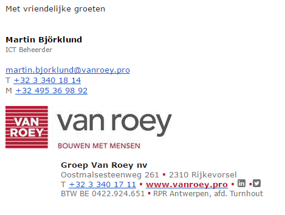
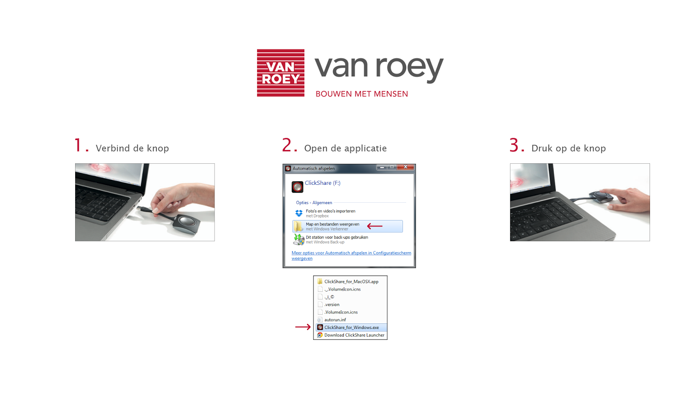

Huisstijl van het stagebedrijf
April 20, 2016
Hier ziet u het logo van Groep Van Roey. Dit is het logo dat je altijd zal terugvinden in het dagelijkse leven als je in contact komt met het bedrijf of als je langs een werf passeert. Dit logo staat ook altijd in het klein links bovenaan op een papier dat op het bedrijf afgedrukt wordt.

Dit is de handtekening van de mails van de werknemers. Dit wordt standaard meegestuurd wanneer een mail verzonden wordt.

Deze foto staat op de schermen in de vergaderzalen. In deze zalen maken ze gebruik van Clickshare, een tool om beeld van je pc naar een tv te streamen. Het is een korte handleiding die ervoor zorgt dat externen of collega’s die weinig technische kennis hebben, altijd weten hoe ze Clickshare moeten opstarten.